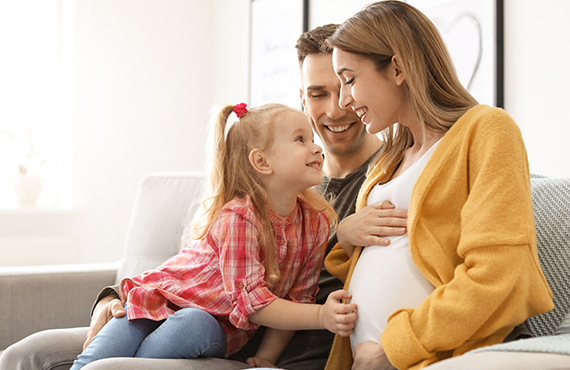

я могу помочь вам быстро и качественно
проработать следующие вопросы:

Личные отношения, семья
Финансовые вопросы


Улучшение качества жизни
Сложности с деторождением и детьми


Системные расстановки являются одним из самых лучших и глубоких инструментов для диагностирования сложностей и неразрешимых задач разного уровня. Это методика, которая позволяет обходить защитные механизмы нашего подсознания и обнаруживать самые глубинные наши сложности, которые не позволяют нам достигать счастья, успеха и гармонии с собой и в отношениях в близкими или деловыми партнерами. Именно системные расстановки позволяют наиболее хорошо, и, при этом, наиболее мягко и экологично раскрывать проблему на глубинных уровнях. И если обычные расстановки просто вскрывают эти вопросы и дальше человек остается с этим наедине, то на нашем сеансе в работу с вами подключается специалист по системно-образной терапии и помогает вам проработать эту ситуацию, с какими бы сложными и эмоциональными переживаниями, она не была связана. Эмоционально-образная терапия дает возможность вернуть каждому человеку ресурсное состояние из любых обстоятельств прошлого.
Это была моя первая коуч-сессия и Андрей настолько феноменально легко (для меня) и профессионально её провёл, что я до сих пор улыбаюсь, стоит вспомнить её итоги. Очень располагающий (по фото у меня было немного другое впечатление) и душевно добрый человек . так как вначале беседы у меня был немалый напряг (не могла расслабиться, зажатая была), то он, просто беседуя со мной открыто и легко, смог убрать мешающее напряжение. Так как я не до конца верила в свои силы, то по началу и не чётко осознавала образы, но потом …. Пошло и поехало так, что я пару раз аж подпрыгивала на кресле от того как неожиданно и чётко предо мной возникали картинки (при этом ещё и эмоционально наполненные). И так шаг за шагом, образ за образом, слушая (и уже вовсю доверяя) голос Андрея я смогла прочувствовать себя и свои проблемы. Причём некоторые из знала (чувствовала, что есть тут проблемка), некоторые напоминали о себе отдалённо, а вот некоторые ВООБЩЕ даже не знала что есть. Это было как открытие чего-то сокровенного и очень ранимого. Я ТАК БЛАГОДАРНА Андрею, что он нашёл это и очистил. Это как собирать себя по кусочкам: вначале не знаешь и с чего начать, а потом деталька к детальке - всё и получается и вырисовывается определённых сюжет-образ, понятный для восприятия. Такое приятное ощущение, когда собираешь и находишь себя! Находишь свои потерянные частички и обнимая их, возвращаешь себе ) Самое приятное открытие, которое можно сделать для себя!!! А ведь впереди таких открытий ещё не мало, и это придает такой заряд позитива, что хочется улыбаться и улыбаться. Мне стало легче и проще прислушиваться к себе, ощущать себя. Думать и жить «плавно», а не сумбурными, нервными рывками . Спасибо Андрею и желаю всех благ этому замечательному и открытому «чудеснику»!
г. Кимры
Это была моя первая коуч-сессия и Андрей настолько феноменально легко (для меня) и профессионально её провёл, что я до сих пор улыбаюсь, стоит вспомнить её итоги. Очень располагающий (по фото у меня было немного другое впечатление) и душевно добрый человек . так как вначале беседы у меня был немалый напряг (не могла расслабиться, зажатая была), то он, просто беседуя со мной открыто и легко, смог убрать мешающее напряжение. Так как я не до конца верила в свои силы, то по началу и не чётко осознавала образы, но потом …. Пошло и поехало так, что я пару раз аж подпрыгивала на кресле от того как неожиданно и чётко предо мной возникали картинки (при этом ещё и эмоционально наполненные). И так шаг за шагом, образ за образом, слушая (и уже вовсю доверяя) голос Андрея я смогла прочувствовать себя и свои проблемы. Причём некоторые из знала (чувствовала, что есть тут проблемка), некоторые напоминали о себе отдалённо, а вот некоторые ВООБЩЕ даже не знала что есть. Это было как открытие чего-то сокровенного и очень ранимого. Я ТАК БЛАГОДАРНА Андрею, что он нашёл это и очистил. Это как собирать себя по кусочкам: вначале не знаешь и с чего начать, а потом деталька к детальке - всё и получается и вырисовывается определённых сюжет-образ, понятный для восприятия. Такое приятное ощущение, когда собираешь и находишь себя! Находишь свои потерянные частички и обнимая их, возвращаешь себе ) Самое приятное открытие, которое можно сделать для себя!!! А ведь впереди таких открытий ещё не мало, и это придает такой заряд позитива, что хочется улыбаться и улыбаться. Мне стало легче и проще прислушиваться к себе, ощущать себя. Думать и жить «плавно», а не сумбурными, нервными рывками . Спасибо Андрею и желаю всех благ этому замечательному и открытому «чудеснику»!
г. Кимры
Это была моя первая коуч-сессия и Андрей настолько феноменально легко (для меня) и профессионально её провёл, что я до сих пор улыбаюсь, стоит вспомнить её итоги. Очень располагающий (по фото у меня было немного другое впечатление) и душевно добрый человек . так как вначале беседы у меня был немалый напряг (не могла расслабиться, зажатая была), то он, просто беседуя со мной открыто и легко, смог убрать мешающее напряжение. Так как я не до конца верила в свои силы, то по началу и не чётко осознавала образы, но потом …. Пошло и поехало так, что я пару раз аж подпрыгивала на кресле от того как неожиданно и чётко предо мной возникали картинки (при этом ещё и эмоционально наполненные). И так шаг за шагом, образ за образом, слушая (и уже вовсю доверяя) голос Андрея я смогла прочувствовать себя и свои проблемы. Причём некоторые из знала (чувствовала, что есть тут проблемка), некоторые напоминали о себе отдалённо, а вот некоторые ВООБЩЕ даже не знала что есть. Это было как открытие чего-то сокровенного и очень ранимого. Я ТАК БЛАГОДАРНА Андрею, что он нашёл это и очистил. Это как собирать себя по кусочкам: вначале не знаешь и с чего начать, а потом деталька к детальке - всё и получается и вырисовывается определённых сюжет-образ, понятный для восприятия. Такое приятное ощущение, когда собираешь и находишь себя! Находишь свои потерянные частички и обнимая их, возвращаешь себе ) Самое приятное открытие, которое можно сделать для себя!!! А ведь впереди таких открытий ещё не мало, и это придает такой заряд позитива, что хочется улыбаться и улыбаться. Мне стало легче и проще прислушиваться к себе, ощущать себя. Думать и жить «плавно», а не сумбурными, нервными рывками . Спасибо Андрею и желаю всех благ этому замечательному и открытому «чудеснику»!
г. Кимры
Человек, который помогает основному участнику в самоосознании и выполняет роль его родных или близких, в процессе решая свои личные запросы
ПодробнееЧеловек, который приходит с личным запросом и прорабатывает его при помощи заместителей и специалистов
Подробнее